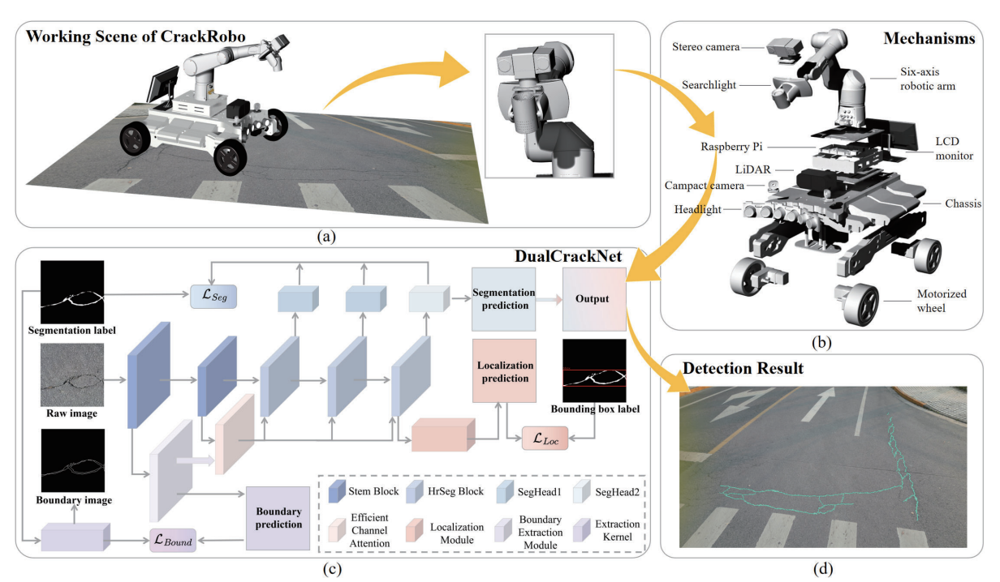

|
I am an undergraduate student at Tongji University, majoring in Automation (B.E.) at the College of Electronic and Information Engineering. I am a member of the MIAS Group, supervised by Prof. Rui Fan. My research interests lie in computer vision and robot perception, with a current focus on 3D mesh reconstruction and generation, panoptic occupancy prediction, and world models. I enjoy building large-scale benchmarks and open-source tools, and sharing what I learn along the way. |
|
Georgia Institute of Technology
2026 Fall (Admitted) → Deferred to 2027 Fall M.S. in Robotics |
|
 |
The Hong Kong University of Science and Technology (Guangzhou)
2026.07 - Present Research Assistant (RA) Intern Research Advisor: Prof. Haoang Li (IRPN Lab) |
 |
Tongji University, College of Electronic and Information Engineering
2021.09 - 2026.06 B.E. in Automation Research Advisor: Prof. Rui Fan (MIAS Group) |
|
|

An Instance-Centric Panoptic Occupancy Prediction Benchmark for Autonomous Driving (CarlaOcc) IEEE/CVF Conference on Computer Vision and Pattern Recognition (CVPR), 2026 Accepted (PC Decision · Final Score 455) A large-scale instance-level panoptic occupancy benchmark built on the CARLA simulator, featuring multi-modal data collection, pedestrian mesh extraction and reconstruction. 
KITTI-360-PO: A Panoptic Occupancy Benchmark for Geometrically Complete Scene Understanding Under Review Under Review A large-scale instance-level dataset built on KITTI-360 with a data processing pipeline for automatic instance extraction, instance segmentation and mesh reconstruction of dynamic objects — targeting geometrically complete outdoor scene understanding. 
Transformer and Trainable Bilateral Filter for Unsupervised Stereo Matching IEEE International Conference on Real-time Computing and Robotics (RCAR), 2025 TBSMNet, an unsupervised stereo matching network integrating a hybrid Transformer–CNN encoder with a trainable bilateral filter for adaptive noise suppression. Achieves significant accuracy improvements on SceneFlow and KITTI.  IEEE International Conference on Real-time Computing and Robotics (RCAR), 2025 A collaborative dual-branch learning framework for robust and real-time road crack detection, validated on a robotic sensing platform. |
|
|